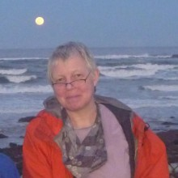

Please note: the AAS Obituaries are temporarily being hosted on this website while their full content is being ingested into the PubPub publishing platform newly adopted by the Bulletin of the American Astronomical Society. When the migration is complete, your existing links will take you to the final, migrated content. Contact peter.williams@aas.org with any questions.
Alanna Connors (1956-2013)
Reprinted with permission from the Harvard-Smithsonian Center for Astrophysics.
Our friend, mentor, and colleague Alanna Connors passed away on February 2, 2013. She had been fighting cancer for 16 years.
Alanna was born on September 25 1956 in Hong Kong and grew up in Greenwich, CT. She received her undergraduate physics degree at the Massachusetts Institute of Technology in 1978 and a Doctorate in Physics and Astronomy at the University of Maryland in 1988. Her thesis, written based upon research conducted at NASA's Goddard Space Flight Center, was on Fast X-ray Transients. She went on to make significant contributions to the Compton Gamma Ray Observatory. Alanna was also a research scientist at the Space Science Center at the University of New Hampshire, and a visiting Professor at Wellesley College. She was a founding member of the international astrostatistics collaboration CHASC at Harvard University and the Harvard-Smithsonian Center for Astrophysics.
Alanna was a pioneer in the development of principled Bayesian methods to apply to astrophysical problems. As a longtime advocate of rigorous data analysis, she introduced many people to the joys of Bayesian statistics. Her research in X-rays and later gamma-ray astrophysics required solid statistical methods which were generally unknown to astronomers in the early nineties. At a time when Bayesian analysis was out of favor in Statistics, and detailed statistical analyses were not generally considered in astrophysics, she was farsighted enough to realize they were both necessary for future progress, and worked ceaselessly to promulgate these ideas. She developed a search detection algorithm with Poisson maximum likelihood for X-ray transients and used it on the HEAO-1 A2 X-ray data in her first research paper published in Astrophysical Journal in 1986 (ApJ 303, 769), which became part of her Ph.D. thesis. When she started working with CGRO Comptel data she also became interested in detection and characterization of gamma-ray bursts. She was among the first to recognize the potential of the Bayesian Blocks algorithm; her work provided early demonstrations of its capabilities for detecting gamma-ray bursts and pulsars. Besides being a trailblazer in Bayesian astrostatistics, Alanna was also among the earliest to see the promise of Python for data analysis in astronomy, participating as a co-investigator on one of the earliest NASA-funded projects building Python statistical software for astronomers.
Alanna was a perennial source of encouragement to students and other researchers she met at Conferences, and was always available to discuss algorithms, methodologies, and problems. Her encouragement and participation were critical to the success of the CHASC collaboration that was set up between high-energy astronomers and statisticians at Harvard in the wake of the launch of the Chandra X-Ray Observatory. That the collaboration has grown to be as productive as it has owes a great deal to her ability to notice where astronomical analyses were lacking and where principled analysis could contribute to correct it. A case in point was her realization that astronomers were misusing the ubiquitous F-test. This led directly to one of the most influential papers to come out of the CHASC collaboration, "Statistics, Handle with Care: Detecting Multiple Model Components with the Likelihood Ratio Test" (ApJ 571, 545).
She had a felicity with principled statistical analysis that was the envy of most people. The mathematics of the Poisson distribution came easily to her. Indeed, no talk or presentation of hers was complete without her standing in front of a complicated mathematical expression and trying to explain that it was actually very simple and straightforward. She put this expertise to good use in developing Bayesian image deconvolution methods, first with EMC2, and then with LIRA. It is due to her efforts that it has become possible to speak of the significance of a 2D feature. The initial work was described by in the review published as part of the Statistical Challenges in Modern Astronomy conference in 2007. She continued to refine the method over the past few years, and was working on it to the very end.
Alanna's most far-reaching and enduring impact may well come from her tireless outreach efforts, both outreach to colleagues through her efforts on astrostatistics education, and her outreach to the public. She organized dozens of workshops and special astrostatistics sessions at conferences dedicated to highlighting new methodologies and clever algorithms. But she never lost sight of the purpose of these tools. She always grounded her work in astronomically relevant cases, as for instance disentangling the cosmic gamma-ray background from the galactic, which she used as the primary motivator for LIRA.
She also had an interest in public science education. She taught astrophysics at Wellesley College, contributed to university physics instruction at UNH and UMD, contributed to public education in science through projects at The Christa McAuliffe Planetarium at Concord NH, participated in family science days at her son's elementary school, and encouraged exploratory science learning and teaching through many other avenues. An abiding interest in the history of physics and astronomy from its ancient origins, in welcoming women's participation in physics, and celebrating stories of diverse contributors to science underlay her service on the American Physical Society Forum for the History of Physics, and other projects.
Beloved wife of Phillip Alan Veatch, loving mother of Roy Micah Veatch, Alanna filled all of her life exploring the wonders of the world and sharing her smile and caring with friends, relatives, colleagues, and strangers. She died at home in the arms of her family. Alanna is survived by her mother Sonia Connors of Arlington, MA; sisters Cynthia Connors of Brooklyn, NY, Kathleen Connors of Hau'ula, Oahu, HI, Noirin Connors of London, England; and her brother Patrick Connors of New York, NY.
Obituary written by: Aneta Siemiginowska, Elizabeth Cavicchi, Tom Loredo, Vinay Kashyap
BAAS Citation: BAAS, 2013, 45, 018